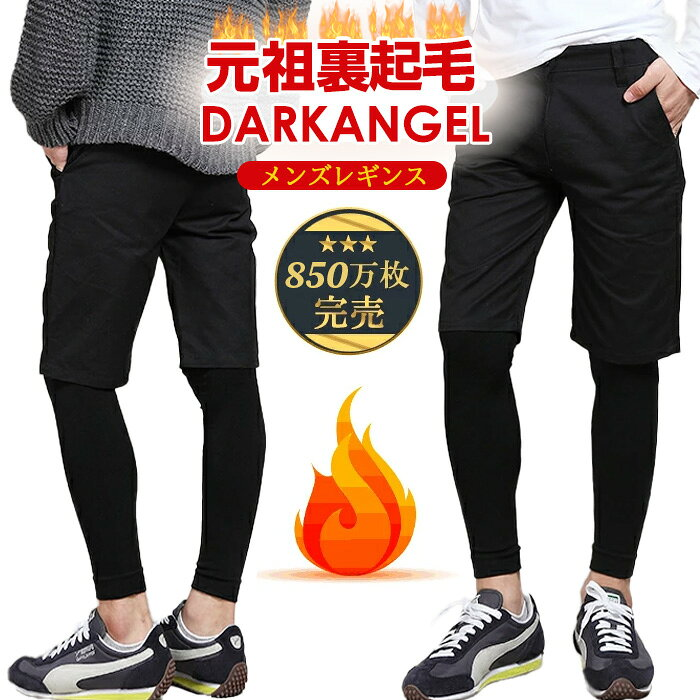

メンズファッション
メンズファッション比較|防寒インナー&ポロ&ロングT
2026-10-31

※本記事には商品プロモーション(アフィリエイト広告)を含みます【PR】
季節の変わり目や普段のコーディネートで役立つメンズアイテムを3点ピックアップしました。価格帯やレビュー評価が異なる3商品を比較しながら、それぞれどんな場面に向いているのかをご紹介します。
冷える季節に頼れる防寒インナーの特徴
気温が下がる時期は、アウターの下に着る防寒インナーの有無で体感が大きく変わります。『49%OFF!【期間限定：1枚1,000円！3枚セット購入で】元祖 暖かい 裏起…』は1,390円(税込)という手に取りやすい価格帯でありながら、レビュー件数2,872件・平均評価3.91という多くの購入者からの評価が集まっている商品です。商品説明には価格に関する案件(メーカー希望小売価格の表示やキャンセルポリシーの追記)が中心に記載されており、素材感などの詳細情報は限られていますが、レビュー数の多さからも需要の高さがうかがえます。複数枚セットでの購入を検討している方は、価格面でのメリットも確認しておくとよいでしょう。

爽やかな印象を作るドット柄ポロシャツ
きちんと感とカジュアルさを両立させたいときに選びやすいのがポロシャツです。『ポロシャツ ドット 水玉柄 2枚衿 メンズ ファッション トップス 服 春 夏 …』は1,998円(税込)で、レビュー件数1,854件・平均評価4.33と、今回紹介する3点の中でも評価の高さが目立つアイテムです。商品説明によると、さらりとした風合いと優れた通気性が特徴の鹿の子素材を使用しており、前立てや袖裏、衿元にドット柄をあしらうことで上品な大人のカジュアル感を演出しているとのことです。また、ややコンパクトなサイズ感によりスマートな印象で着用できる点も特徴として挙げられています。春から夏にかけての通気性を重視したい方に向いている一着です。

着回しやすいロングTシャツの魅力
部屋着から普段着まで幅広く使える一枚を探している方には、ロングTシャツも選択肢に入ります。『送料無料 2026年リニューアルバージョン ロングTシャツ メンズ 長袖Tシャツ…』は899円(税込)と今回の3点の中で最も価格が抑えられており、レビュー件数1,849件・平均評価4.31と安定した評価を得ています。商品説明では、オールド感のあるアメカジ、フォトプリント、ミリタリープリントなどバラエティーに富んだ柄が用意されており、サイズも3Lまで展開されていると紹介されています。カラー展開も多く、部屋着やカジュアルコーデなど複数の場面で使い分けたい方に適したアイテムといえます。

防寒インナー、通気性に優れたポロシャツ、着回しやすいロングTシャツと、それぞれ目的の異なる3点をご紹介しました。季節や使うシーンに合わせて、レビュー評価や商品説明の内容を参考に選んでみてください。


読み込み中...